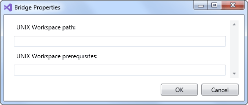

Declaring a Unix Image of a Windows Workspace |
|
This task shows you how to declare a Unix image workspace of a Windows workspace to a Unix computer using the Unix bridge. |
Before you begin: Note that:
|
Open the Windows workspace in the 3DS Workspace Explorer.
See Opening a Workspace.
On the Tools menu, click Unix Bridge properties.
The Bridge Properties dialog box opens.

In the UNIX Workspace path box, type the path of the directory that will contain the image workspace of the Windows workspace.
In the UNIX Workspace prerequisites box, type the path of the Unix workspace containing the prerequisites of the image workspace to create.
If several workspaces are needed, separate their paths with semicolons.
Click OK.
The Unix workspace is declared as an image of the Windows one.
| Version: 1 [Feb 2018] | Document created |